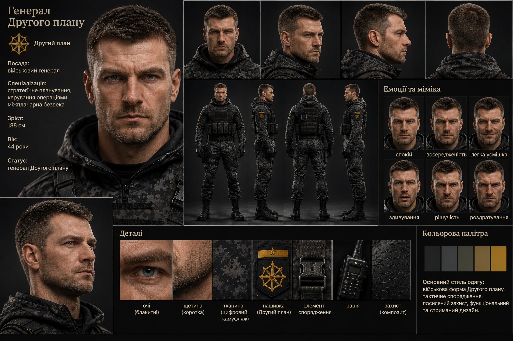

ОСНОВНА ІНФОРМАЦІЯ
Командувач Другого плану
Бакір — генерал Другого плану, залучений до координації військових операцій і масштабної евакуації цивільного населення. У бойових епізодах він стежить за повітряною обстановкою, керує переміщенням винищувачів і перекидає резерви на загрозливі напрямки. У стратегічних нарадах працює з розрахунками потоків між планами та плануванням ресурсів.
Вік: 44 роки
Зріст: 188 см
Статус: генерал Другого плану
Посада: військовий генерал
Спеціалізація: стратегічне планування, керування операціями, міжпланарна безпека
РОЛЬ У СЮЖЕТІ
Оборона та евакуація
Під час боїв Бакір керує силами винищувачів Другого плану, реагує на концентрацію ворожої авіації біля міста-шляху та спрямовує резерви туди, де противник намагається здобути перевагу. Під час евакуації цивільних він контролює роботу транспортних вузлів і разом з іншими керівниками планує допустимі потоки переходів між планами.
У подальших обговореннях він бере участь у рішеннях щодо перенесення виробництва житлових модулів і розподілу ресурсів, необхідних для порятунку населення.
ЗОВНІШНІСТЬ
За наданим візуальним профілем: 44 роки, зріст 188 см, коротке темно-русяве волосся, блакитні очі, коротка щетина. Носить темну тактичну форму Другого плану із золотистою символікою та спорядженням.